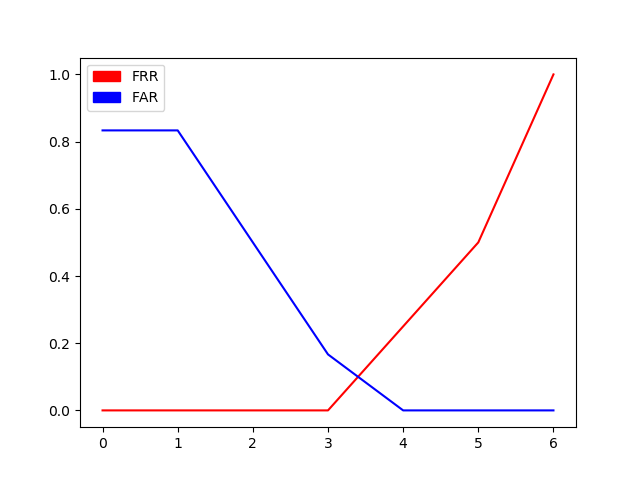
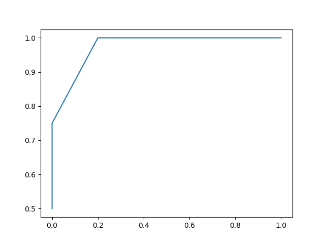

This homework is for the Biometrics class in Yildiz Technical University. There are 10 stored faces in database. These faces are probed with 4 geniune and 6 impostor test images. Hand calculations are done on paper and photos are added to the end of this page.
The image processing is done by the help of the Python language. The Python version is 3.6.4. Anaconda installation pack installs all of these libraries if I recall correctly. The library and the frameworks are:
Individual questions can be accessed via panel to the right. A-D are geninue and E-J are impostors. The match pair and scores are like this:
| Match pairs | A | B | C | D | E | F | G | H | I | J |
| Scores | 5 | 3 | 5 | 4 | Fail | 3 | 2 | 1 | 2 | 1 |
| Score=1 | Score=2 | Score=3 | Score=4 | Score=5 | Failure | |
| Geninue | 0 | 0 | 1 | 1 | 2 | 0 |
| Impostor | 2 | 2 | 1 | 0 | 0 | 1 |
| Score=1 | Score=2 | Score=3 | Score=4 | Score=5 | Failure | Geniune | 0 | 0 | 1/4 | 1/4 | 1/2 | 0 |
| Impostor | 1/3 | 1/3 | 1/6 | 0 | 0 | 1/6 |
| Threshold | FRR | FAR |
| 1 | 0 | 5/6 |
| 2 | 0 | 1/2 |
| 3 | 0 | 1/6 |
| 4 | 1/4 | 0 |
| 5 | 1/2 | 0 |
| 6 | 1 | 0 |
Failure to Acquire could be defined as:
FTA for Geniune = (Geniune Fail Count) / (Total Geniune Count)
FTA for Impostor = (Geniune Impostor Count) / (Total Impostor Count)
| FTA for Geniune | 0 |
| FTA for Impostor | 1/6 |
From the table above in "1. c)" we can easily draw Error vs Threshold graph. Fail sample is excluded.
Plotting source is: FARFRR.py
ROC curve is acquired with using the FRR FAR table. Fail sample is excluded.
Plotting source is: ROC.py
